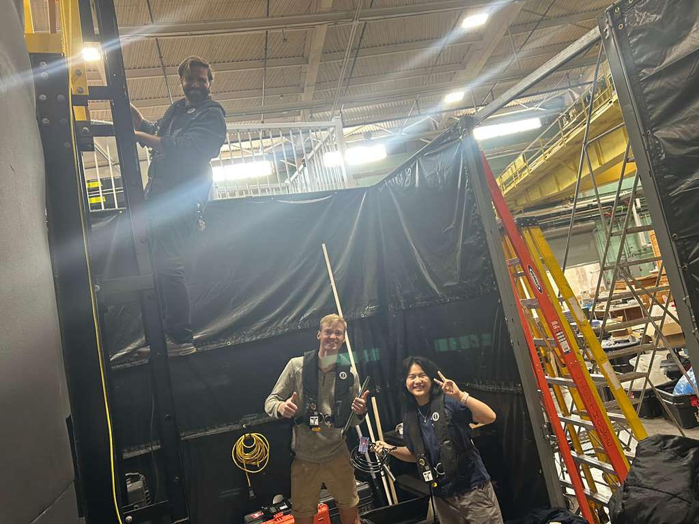

Week 7 Team Updates
Communications:
Worked on creating a function so the clock on the Arduino in the sensor is synced whenever it sends data to the Arduino collecting the data. Used NTP to sync the clock by sending packets from the receiver sensor to the sensor on the Arduino. Integrated the depth sensing code to the sensor and receiver code.
Electronics:
This week, we figured out how the wires will be attached to the equipment. Each wire is tightly wrapped around the nail (clavo) before being secured back onto the device. So far, I was able to successfully attach one wire and nail connection, and we’ll be working on getting the remaining three attached next.
Sensing:
We made graphs of the data from last week. We first used data from nitrate tests on known nitrate concentration levels following the test procedures. We found hue to be more accurate in predicting nitrate concentration compared to saturation and lightness. So with hue and concentration data, we created a line of best fit to predict nitrate concentrations in ppm from hue color levels. Error in nitrate concentration predictions was found to increase with the concentration of the nitrate solutions. Furthermore, a shaken reagent and unmixed solution for the second step of the API nitrate test was found to be the most accurate out of the three groups of unshaken reagent and solution, unshaken reagent and shaken solution, and shaken reagent and unshaken solution. Thus, we will proceed with tests and gather more data for predicting concentrations from nitrate tests with shaken reagent and unmixed solution.
Depth Sensing
Today, we decided to transition from the GY-MS5837-30BA to the ALS-MPM-2F Water pressure sensor.
This required figuring setting up a circutory board. Good to note that it measures depth using current, not voltage.
Required lots of testing, fiddled around to find what voltage is ideal for correct measurement.
We found it needs a voltage of over 8V, and under 36V. The higher the voltage, the more easily you can detect the difference.
Added a voltage booster to the circuit.
Later in the week we tested at a saltwater tank here on campus. It was a lot of fun. We brought the depth sensor there
and brought my laptop and recorded values. We recorded the maximum depth of the tank as 108". We then tested at
different depths and read the amps. The goal was to determine a relationship between the recorded amps and the depth.
When we got back we recorded those values into a graph:
